Leagues (also known as societies) allow you to keep track of a long running series of events with leaderboards and detailed stats. For example if your group plays every Friday night for the season and you want to have a winner at the end, then a League would be the right choice. You can set league handicaps, add guests, notify players when a new event is added and much more.
If you’re unsure of whether you should create a league or a tournament, see this guide for more info.
On the home screen of the app, tap .
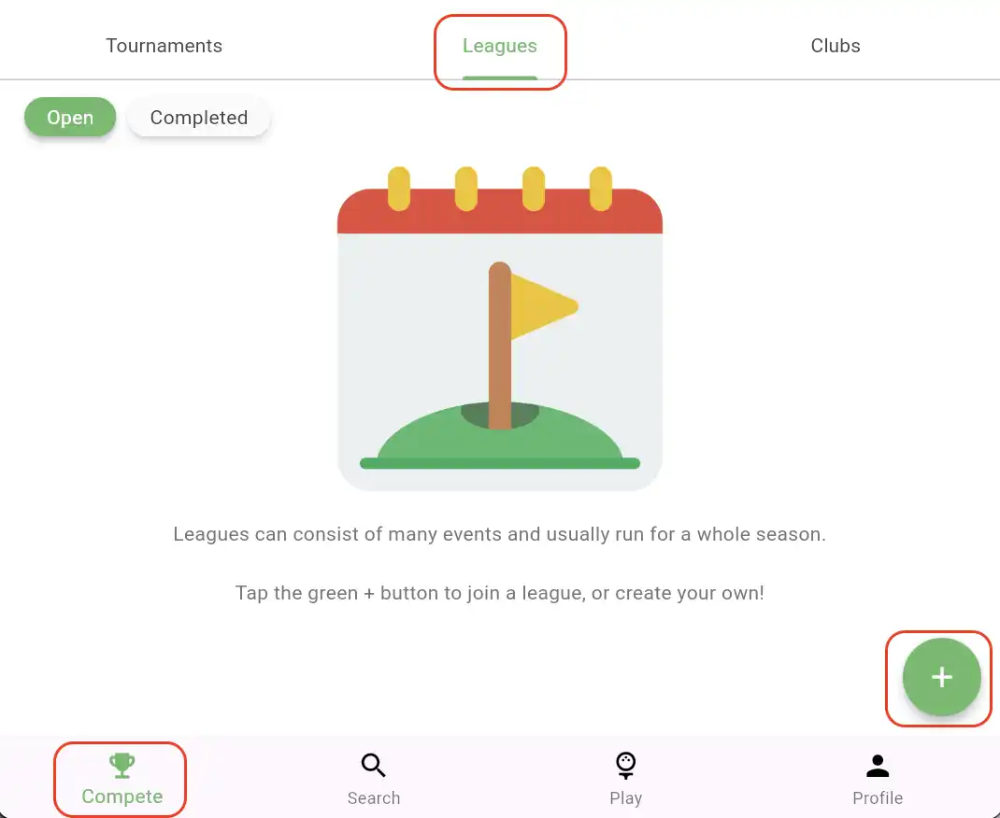
After giving your league a name, you will be shown the league settings page. You can come back to this page at any time after your tournament is created by tapping the gear icon.
On this page, you can tap Players to add players to your league. If you’re not sure yet who you are adding or if you want players to register themselves, you can skip this step.
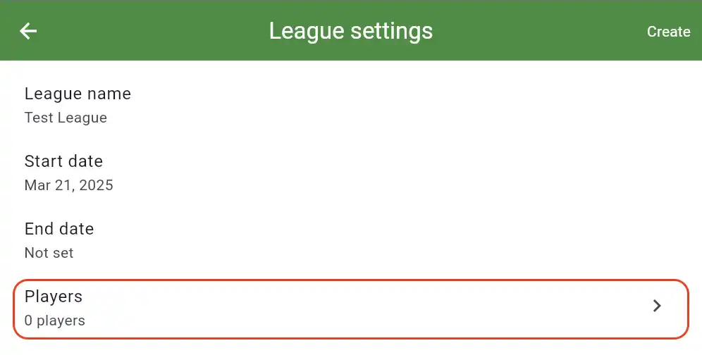
For more information on how to invite players to your league see this article.
Next tap the Add format row.
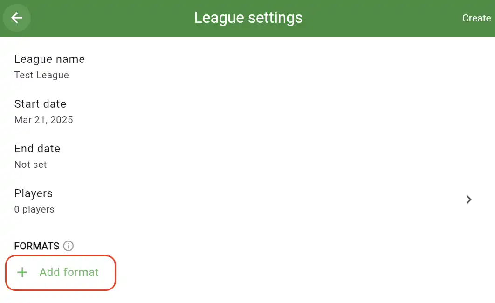
This setting allows you to choose how league scores are calculated. Keep in mind that the league format determines how event scores are combined for the overall league leaderboard, while the tournament format is chosen separately for each event.
For example, if you select Team FedEx Cup as the league format, you can still play different tournament formats each week—such as Best Ball in week one and Alternate Shot in week two.
There are 3 main types of league formats that can be used for individuals or teams.
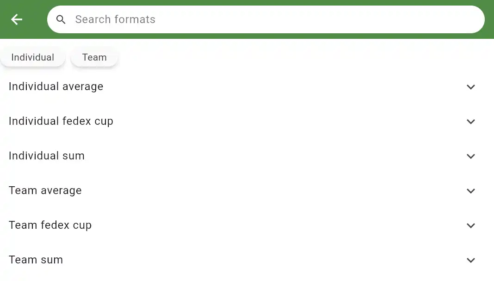
Sum: This will sum all the scores for every player or team for the entire season.
Average: This will average all the scores for every player or team for the entire season.
Fedex Cup: Players or teams are awarded points for the place they finish in each event and the points are added together. You can choose how many points each place gets and you can even customize it per event (e.g. placing in a major might be worth more points).
After selecting a format, you’ll be brought to the league format settings page.
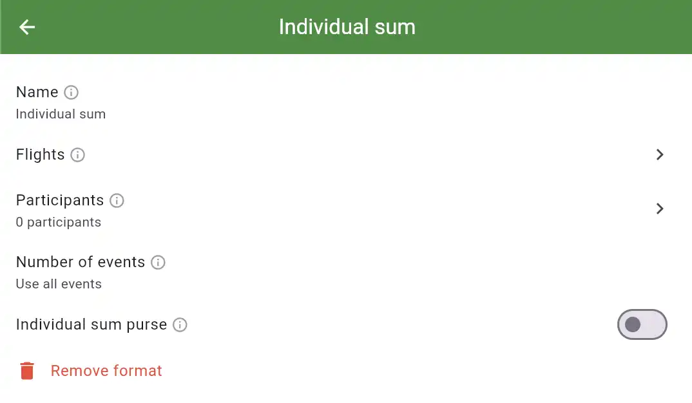
Flights: This allows you group players into different sections so players are only competing against other players in their flight. For example you might have a 0–10 handicap flight and an 11–20 handicap flight.
Participants: By default all players you add to your league are participants in every format. You can use this to exclude players if you do not want them to participate in it. For example if you have one format that has an option buy in, you can exclude the players who do not wish to participate in this format, but still want to participate in other formats.
Number of events: If you only want the top x events from each player to count in the format leaderboard you can select that here. By default all scores count.
Purse: This is where you can set up a purse for the format and configure the buy ins and payouts.
If you’ve selected a Fedex cup format there are a few more options like points to award. If you’ve selected a team format you can set up the teams. Note that you can have different teams in each format.
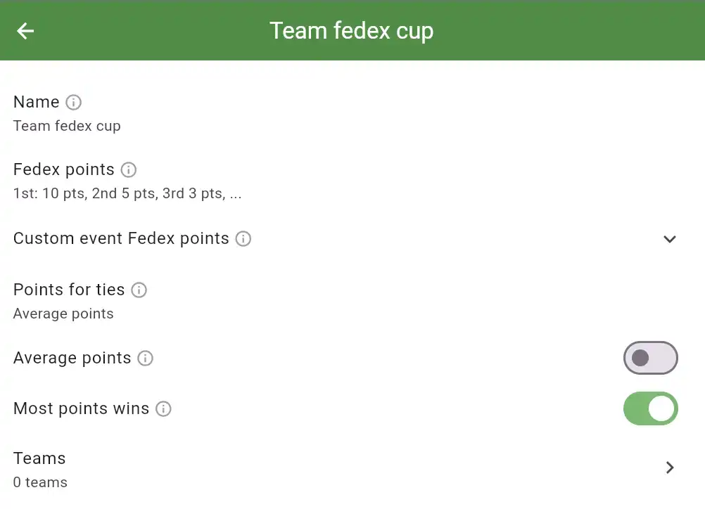
Once you have finished configuring your formats, tap back to return to the league settings page. There are lots of other options for configuring your league including things like allowing players to register themselves, setting up league fees and credit card payments, leaderboard display settings and more. Every option has an info icon beside it that you can tap to get an explanation of what it does.
When you’re done configuring your league tap the Create button in the top right corner to create your league.
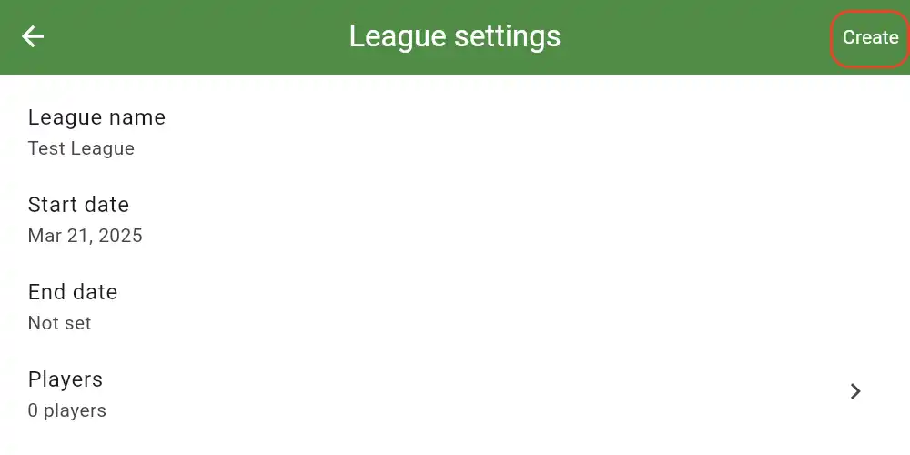
After creating your league, you will be brought to the league home screen. This is what other players will see when they first open your league. You can edit the description to include things like the rules of your league, registration dates, etc.
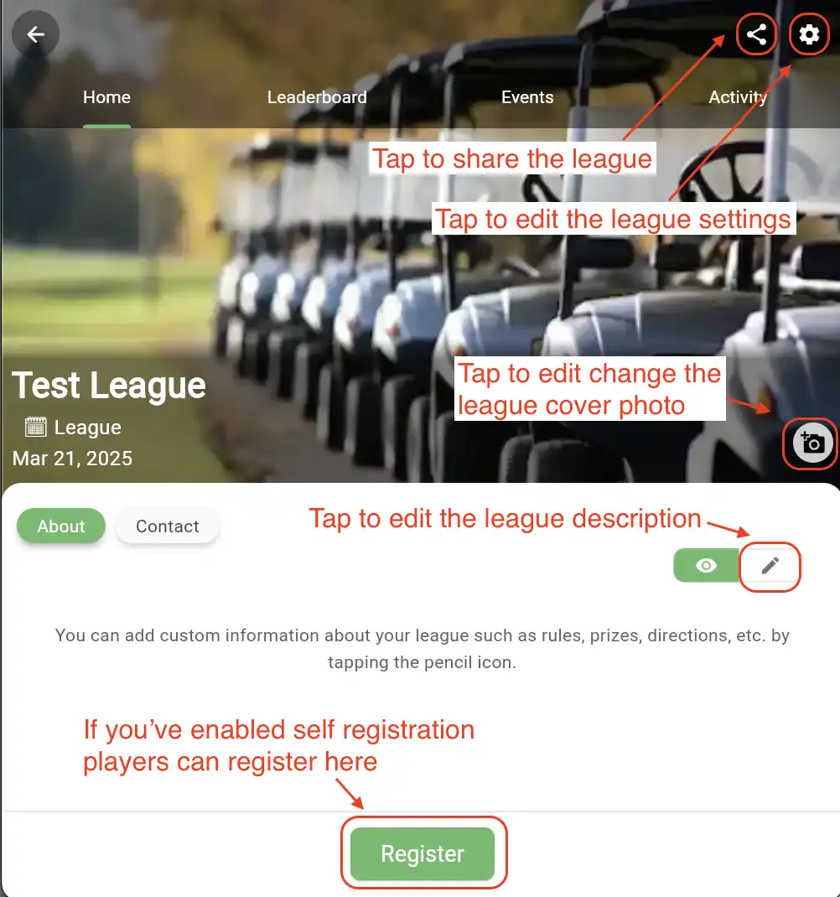
From the league home page, tap the Events tab at the top to start creating the league events. You can create them one at a time as they come up, or you can set up every event in your season right away.
Tap the green + button to create an event.
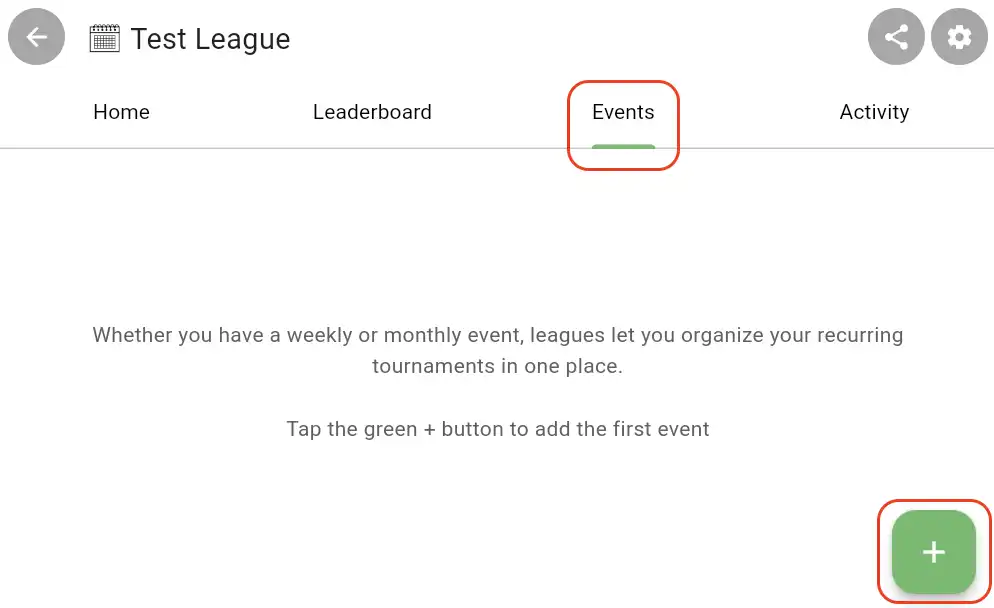
Each event in your league is a tournament, so you can refer to the Creating a tournament for how to set it up. When you add a tournament format to your event, you’ll notice that there is a League section in the tournament format settings. This lets you choose which tournament formats count towards your league formats.
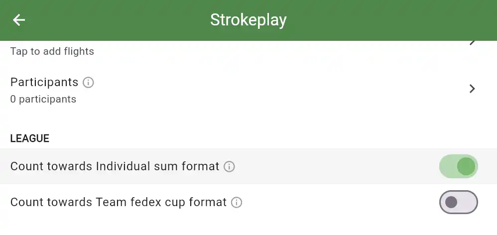
In this example screenshot above, we have previously set up an Individual sum and a Team Fedex cup format in the league. So when we are adding a Strokeplay format to the event, we can see from the screenshot that we are able to choose which league formats the Strokeplay format counts towards. By default, individual tournament formats (Strokeplay in this example) automatically count towards individual league formats (Individual sum in this example). However if you want the Strokeplay format to also count towards the Team fedex cup league format you can do that.
You can also add multiple tournament formats to your event and have them all count towards your league format.
After you have finished creating your event, you will be returned to the league events screen. You can copy the tournament by tapping on the 3 dots on the event card to easily set up all the events in your league season using the settings you configured in the first event.
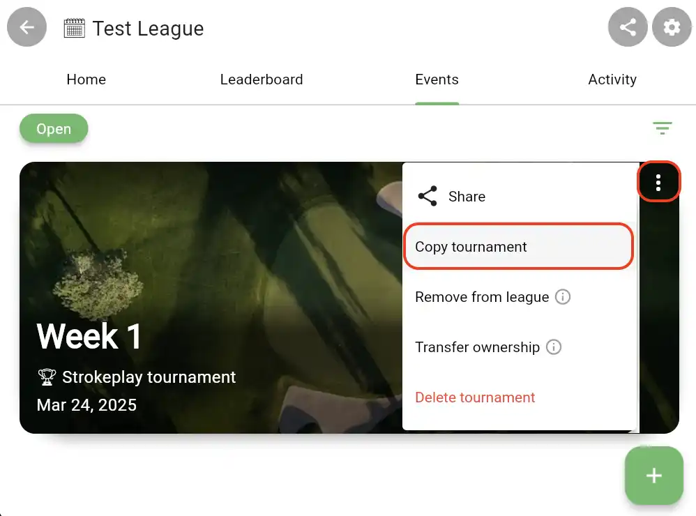
If you want players to be able to find their own substitute when they can’t make an event, you can enable this in the tournament settings. This lets players add a sub for themselves without needing to contact the league admin.
Enabling the setting: Open the event (tournament) settings by tapping the gear icon, then look for the “Allow players to add subs” option and turn it on.
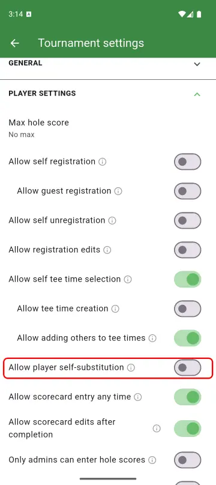
How it works for players: When a player can’t make an event, they can open the event and tap on their name in the player list. From there, they’ll see an option to add a sub. They can choose any existing player from the league or add a new guest as their substitute.
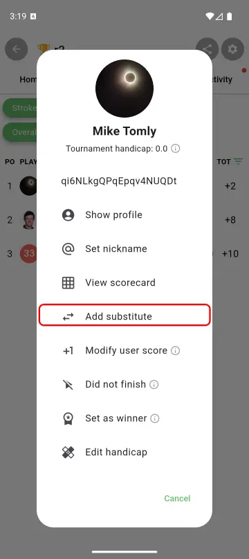
The sub will take the player’s spot for that event only. The original player’s league standings remain unaffected by the sub’s scores. As the league admin, you can always override or remove a sub if needed.
After adding players to your league and entering scores in an event, you can navigate to the league Leaderboard tab to see real time updates on each player or team’s performance. If you’ve added multiple formats to your league, you can see the leaderboard for each format by tapping the format name chip at the top.
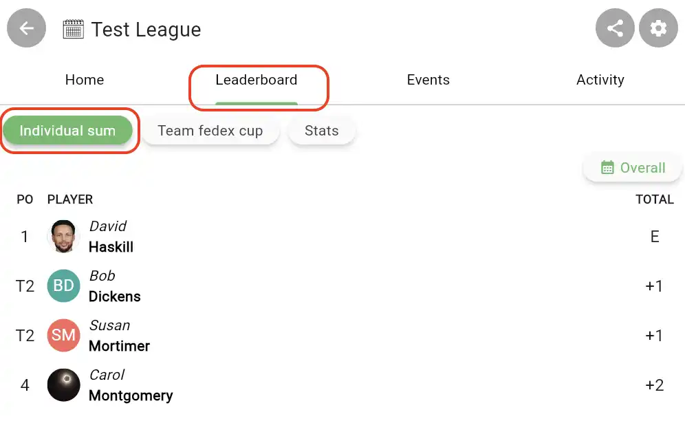
You can see all the event scores used to calculate each player’s overall score by tapping on their score.
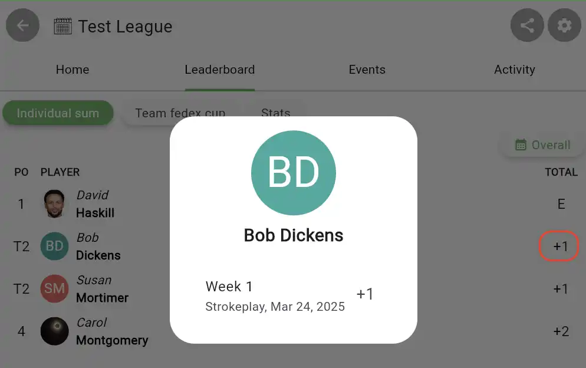
You can review a single event’s scores by tapping on the Overall chip and selecting the event.
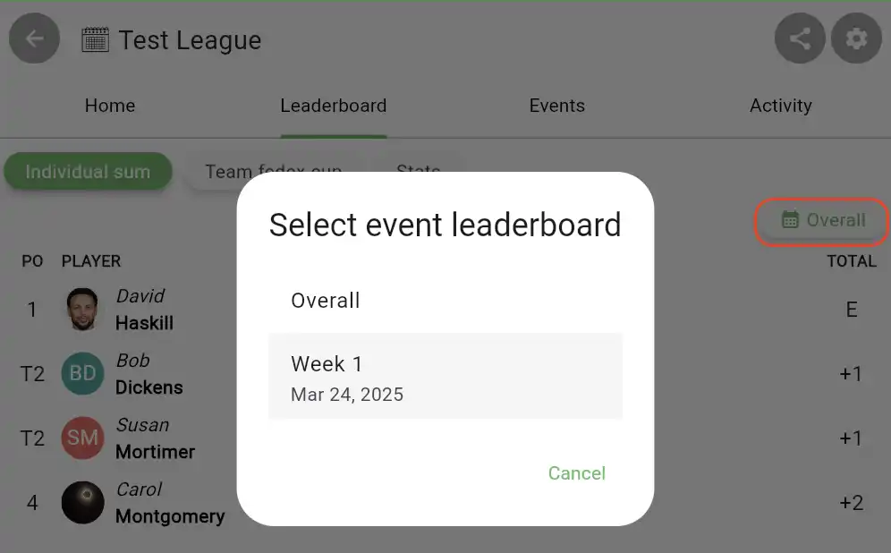
If you tap on the Stats chip, you can see dozens of stats that are kept for each player across the whole season.
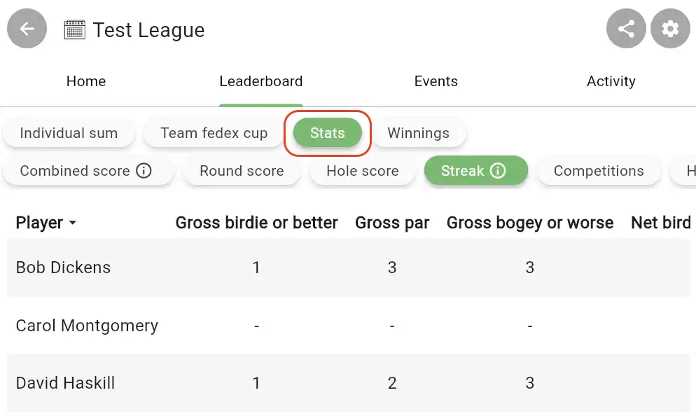
The activity tab is the lifeline of your league. You can use it to send messages to everyone in your league, upload photos and see all the notifications for your league like when a new event is created.
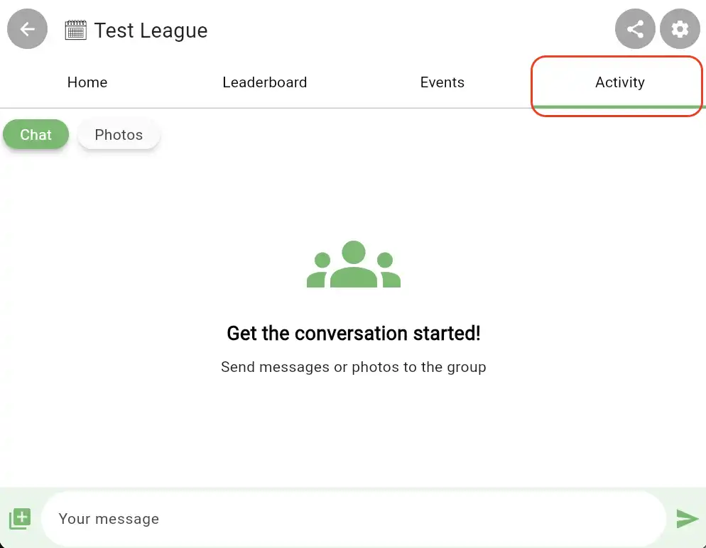
That covers the basics of creating a league and is everything you need to know to get up and running. If you are trying to do something more custom than what was covered here, feel free to explore all the different options in the app.
If you get stuck or want to request a new feature that isn’t in the app, use the Help menu in the app.
Enjoy!